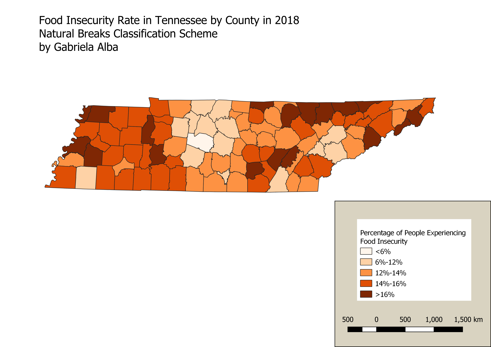

Homework 9: Make a choropleth or proportional symbol map
Gabriela Alba
The map I made depicts the food insecurity rate in Tennessee by county in the year 2018. I found my data from Map the Meal Gap, an initiative driven by Feeding America that seeks to provide data and encourage conversations about food insecurity in the United States. I selected food insecurity rates as my topic because I am interested in the prevalence of food insecurity in certain geographic areas and how social, political, and economic factors can make it difficult to access affordable and nutritious food. Everyone should have the right to access health food as it is critical to your physical and mental health. For this reason, it is important to identify geographic trends of food insecurity so that we can then look at more specific obstacles and barriers in localized regions that contribute to food insecurity.
Choropleth Map
This choropleth depicts food insecurity rates in the state of Tennessee. The counties shaded in the deeper orange colors indicate that a higher percentage of people out of the total population are experiencing food insecurity in that county.

Data used for this project
Source to the CSV
Link to cleaned CSV dataset
Link to geoJSON